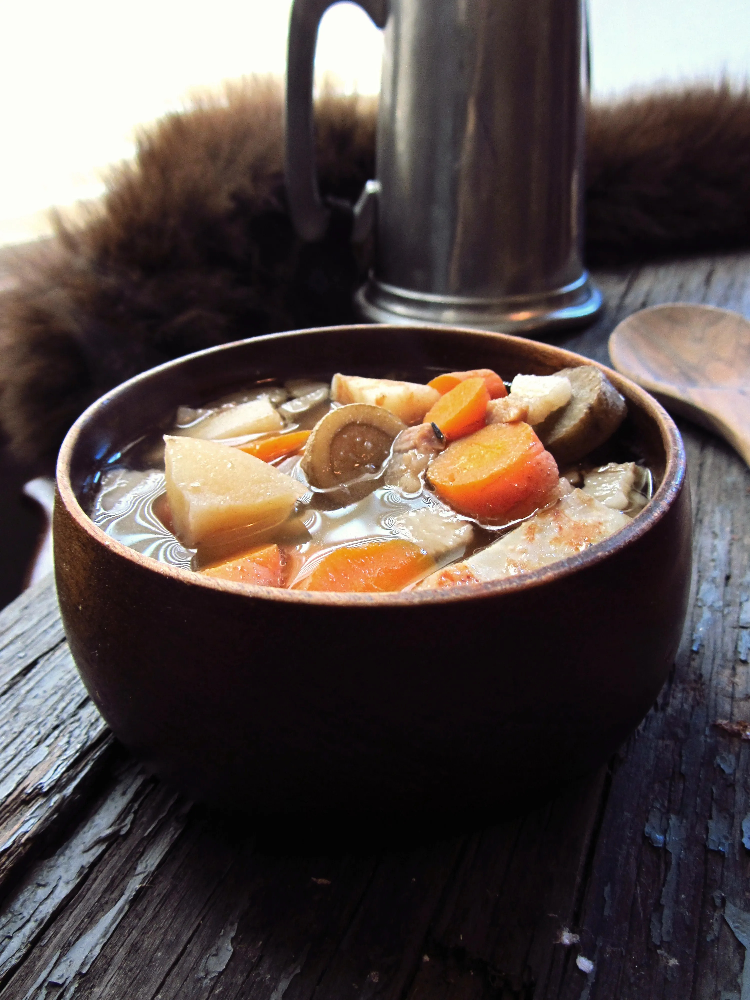

ROOT SOUP

DESCRIPTION
“He found Dolorous Edd at the fire,
complaining about how difficult it was
for him to sleep when people insisted
on blowing horns in the woods. Jon
gave him something new to complain
about. Together they woke Hake,
who received the Lord Commander’s
orders with a stream of curses, but got
up all the same and soon had a dozen
brothers cutting roots for a soup.”
INGREDIENTS
- 1 parsnip
- 3 carrots
- Sprig of thyme
- 1/2 gallon water (8 cups)
- 1 chopped burdock root (about 2 cups)
- 1 cup chopped celeriac root
- 1″ diced horseradish root
- Pearl onions
- 2 cloves garlic
- 1/4 lb. Salt Pork, cut into small flakes
- 1/2 cup grains, such as barley or bulgur
- 1 bottle beer
PROCEDURE
- Combine all ingredients in a pot. Simmer for 3 hours.
- Leave chunky or blend (I left half chunky and blended the other half to make it creamy)
- Consider serving with a bit of bread and cheese.